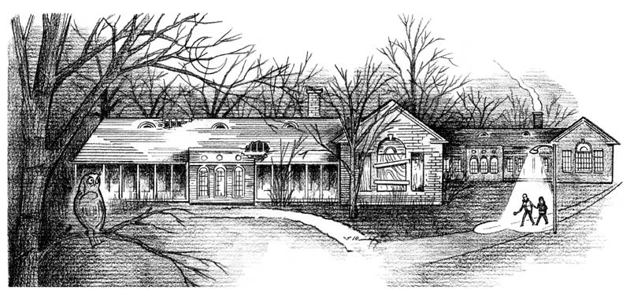

headline here
here
{{ day3.subhede.blurb}}
Escaping
When kids ran to the abandoned building, they often did so in groups. They would coordinate their runs by passing secret notes or banging on the windows.
“Sometimes they would knock on all the windows: Boom! Boom! Boom!” described 17-year-old Kierra Scurry, a former Indian Oaks resident.
Other times, boys would hurl bricks through the windows, shattering the glass and terrifying some of the kids in the process.
“What used to traumatize me was when the boys would throw stuff through the window. The glass would break, and we’d have to go into the fetal position. When that first happened when I was there, I was scared as heck. A lot of girls was crying. I didn’t cry, but I was like what the heck? This place is crazy,” Kierra said.
Stealing condoms
Even with its decaying exterior, gaping holes in the ceiling and stale stench that fills the vacant rooms, the building provided the teens a place to have sex. Malik Castleberry, 18, would come prepared. “I bring my music and my condoms,” he said. To get the condoms, he’d have to hitch a ride to the nearest gas station. He didn’t have money, which he said left him with no other option. “I stole them,” he said.
Sex
Running to the building was treated almost casually by Indian Oaks officials, government records show. In November, a 15-year-old girl had sex with an 18-year-old male peer in the building. "Kids are always going into it," Indian Oaks staff member Stephanie Perry-Ballard told police.
Meisha Singleton, now 19, said she had sex “plenty of times” in the abandoned building. “He’ take off his shirt and we’d do it on his shirt or we’d bring a blanket."
Drugs
The bleak, dank building also provided the teens with a private space to do drugs. When kids returned from a home visit, some would sneak drugs back with them. Sitting together, they would pass around a blunt, Meisha Singleton said. If no one had any drugs, they could always count on a man who stayed at a nearby “crack house,” explained Miss Cannon, a 15-year-old who is currently on the run from a group home in Park Forest. If all else failed, some of the girls would stockpile their pills and share with the group.
“They cheek them,” explained 20-year-old Nancy Rivera. “Then they use other (people’s) meds to get them high.”
Broken glass
The residents turned the glass, bricks and nails littered throughout the building as weapons to harm themselves and others.
In May, a 15-year-old girl ran to the building and tried to commit suicide. She swallowed shards of glass buried in the rubble. The girl stabbed herself in the stomach and cut her arms. She vomited blood.
Intruders
The teens weren’t the only visitors to the building. Everything from raccoons to rats wandered inside. With waist-high grass and wide-open entrances, there is little to deter the animals. Recently, a Tribune reporter observed a raccoon carcass buried in the ruins of one of the rooms.
“It’s creepy in there,” Meisha Singleton described.
Malik Castleberry developed a simple strategy to deal with the raccoons. “I just stand still while they walk past.”
Just out of reach
Although the staff knew the teens escaped to the abandoned building, many would not enter.
“We’re told not to go in there because of safety. It’s a liability for the company,” said Marsha Dailey, who worked at Indian Oaks for five years before leaving last fall.
In October 2013, an 18-year-old male patient got into a physical fight with a staff member, punching the staff member in the stomach and pushing him against a door. The teen was restrained that night, and he went on run shortly after. Two employees followed after him “until he ran into an abandoned building,” according to an Unusual Incident Report to DCFS. They “waited outside the abandoned building” for about 40 minutes. At that point, a supervisor called to tell them that a police report had been filed and “called off the search.” Police picked the 18-year-old up at 3:30 the next morning.
Ghosts
The building’s dark history is not lost on the teens, many of whom believe it is haunted by former psychiatric patients.
“I never believed in ghosts in my life until I went into that building,” Angelique Borden said.
“You could hear stuff,” added Nancy Rivera.
Parties
There were times that the building, in all its despair, could transform the teens from a band of misfits condemned to residential treatment to kings and queens. “We talked. We danced. We sang. We felt like regular teenagers,” said Miss Cannon. “We knew the staff wouldn’t come in there.”
Supplies
Angelique Borden, now 21, worried about the girls who ran away. One day, when she noticed they still weren’t back for breakfast, she collected some food from their food trays, grabbed some water bottles and made her way to the building.
“They didn’t want to come back to IOA because they would know staff would restrain them and they would get hurt,” she said. “The first time I did it, staff asked me why I was doing it. I said ‘Because they need to eat. They haven’t been here for three days.’”
Pregnant
After learning two patients had sex in the abandoned building, employee Stephanie Perry-Ballard told police she would give a pregnancy test to the 15-year-old girl when she returned from school.
Passing out pregnancy tests and checking for sexually transmitted diseases was the norm when kids emerged from the abandoned building, employee Marsha Dailey said.
Footnotes
{#-
{% for row in day3footnotes[1:] %}
-
{{ row.numeral|int }}. {{ row.footnote|process_text() }} » RETURN
{% endfor %}